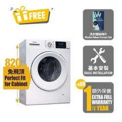
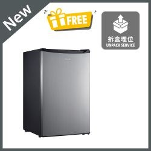
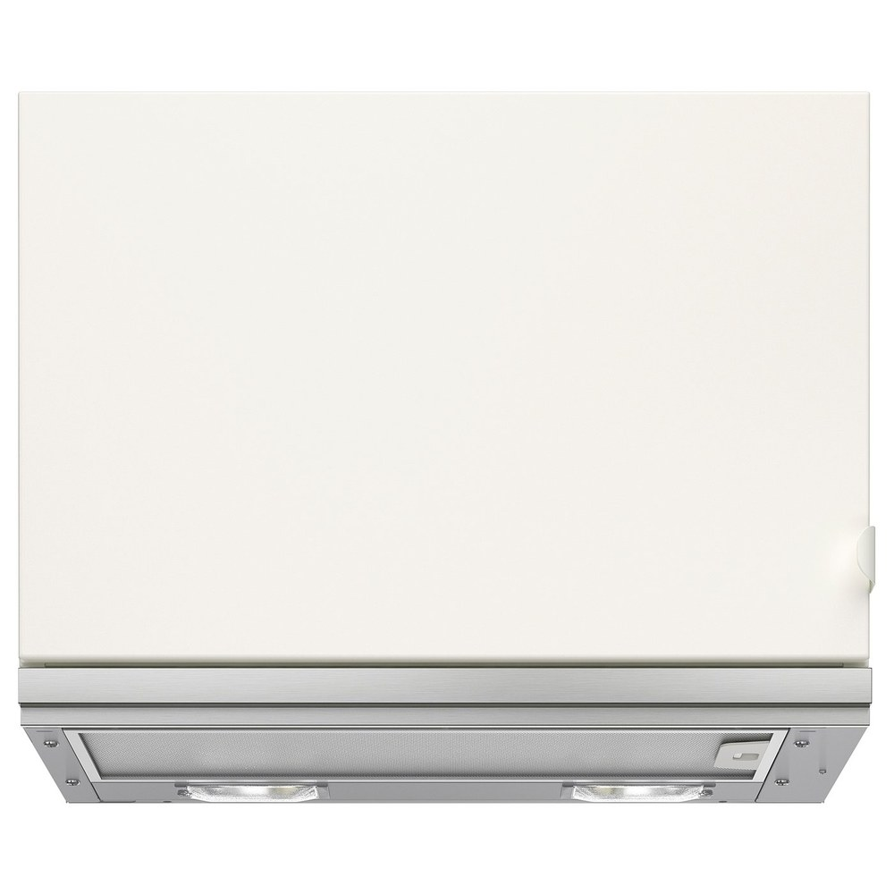
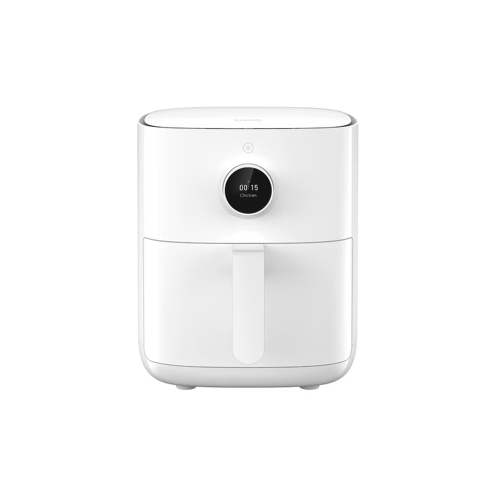
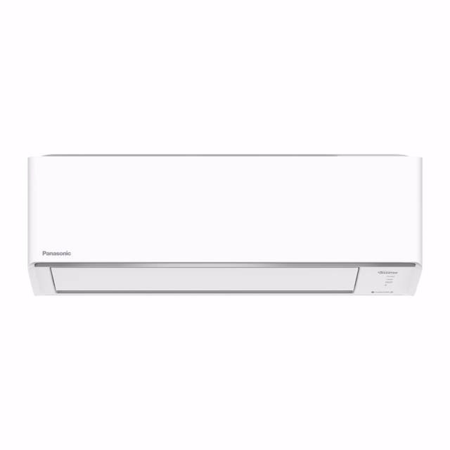
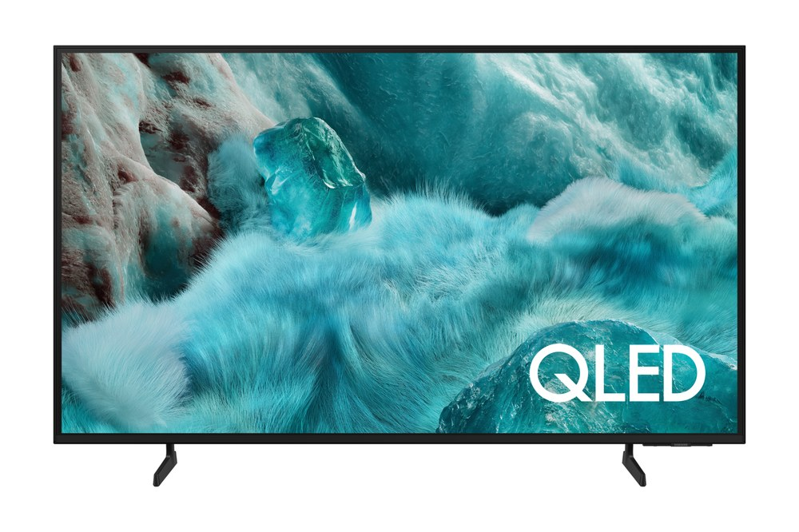

Whirlpool WRAL856411
820 Pure Care+ Front Load Washer Dryer
惠而浦 · 洗衣乾衣機
8.5 kg wash / 6 kg dry, 1400 rpm spin, 15 wash & dry programmes including Steam Refresh and Drum Clean.
8.5 kg6 kg1400 rpm
Every appliance in the TAIONTERRACE flat — official manufacturer manuals, plus a plain-language quick reference so you can get on without reading 40 pages of safety warnings first.
Washer-dryers and laundry appliances

8.5 kg wash / 6 kg dry, 1400 rpm spin, 15 wash & dry programmes including Steam Refresh and Drum Clean.
Cooking, refrigeration and ventilation

131 L single-door direct-cool fridge with a vegetable crisper, glass shelf and reversible door hinge. Knob control from 0 (off) to 7 (coldest); keep it at 4 for normal use.

Built-in 1300 W microwave oven in IKEA 300 stainless steel, with 750 W microwave output, grill, weight-based defrost and a 60-minute timer.

Integrated 60 cm stainless steel cooker hood, supplied with a charcoal filter and a two-way ducting kit for recirculation or extraction.

4.5 L smart air fryer with a rotary control knob and display, app support, keep-warm, defrost, fermentation and 9 preset programmes.

1 L glass health pot on a heating base — STC temperature sensing, a dedicated 90 °C Tea/Coffee mode, 11 temperature steps, an 18-hour all-day timer and an anti-scalding lid. Borosilicate glass body, 800 W.

Ultra slim touch induction cooker — 2000 W, 88.3 % thermal efficiency, 8 power levels and 8 temperature levels, 4-hour timer and 24-hour preset, with a pot included.
Vacuum cleaners, mops and cleaning tools

Cordless stick vacuum with 170 AW suction, 400 W motor, an all-flooring electric brush bar, anti-tangle comb and a 75-minute battery.

Handy cleaning set with a push broom and a floor scraper with a rubber blade — for sweeping and washing floors, balconies and patios.
Air conditioners and temperature control

1.5 HP R32 inverter split unit with Wi-Fi and AI control — 11,900 Btu/h cooling and 13,600 Btu/h heating, on Hong Kong Grade 1 energy label.
Televisions and media

50-inch QLED 4K smart TV with Samsung Vision AI. English and Traditional Chinese user guides are both provided, plus the setup and wall-mount guides.
Water filtration and plumbing fixtures
Made-in-Britain stainless steel under-sink filter system with a Biotect Ultra BTU2501 cartridge and a dedicated chrome drinking-water tap.
Smart lighting and remote controls
Wireless dimmer and power switch for IKEA smart lights and plugs. Works standalone or with the DIRIGERA hub and the IKEA Home smart app. Pair up to 10 devices without a hub.